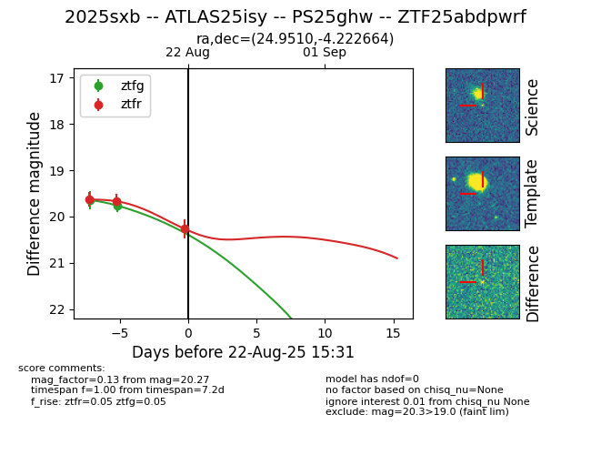

Target 2025sxb at 2025-08-22 17:01, see:
FINK: fink-portal.org/ZTF25abdpwrf
Lasair: lasair-ztf.lsst.ac.uk/objects/ZTF25abdpwrf
ALeRCE: alerce.online/object/ZTF25abdpwrf
TNS: wis-tns.org/object/2025sxb
YSE: ziggy.ucolick.org/yse/transient_detail/2025sxb
alt names
ZTF25abdpwrf (ztf,alerce)
2025sxb (tns,yse)
ATLAS25isy (atlas)
PS25ghw (panstarrs)
coordinates:
equatorial (ra, dec) = (24.9510,-4.22266)
galactic (l, b) = (151.7876,-64.35011)
photometry
last atlasc=19.46, atlaso=19.74, ztfg=19.76, ztfr=20.27
1 atlasc, 1 atlaso, 2 ztfg, 3 ztfr detections
